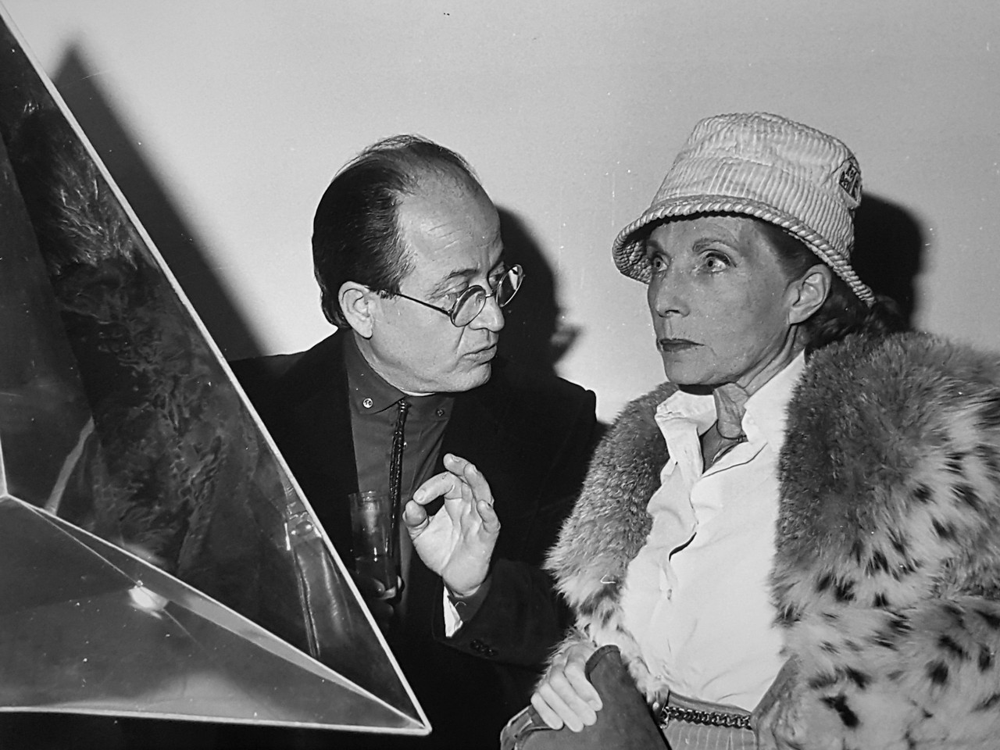
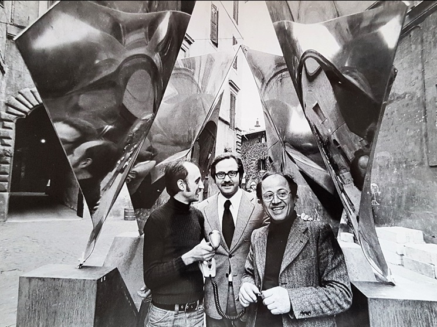
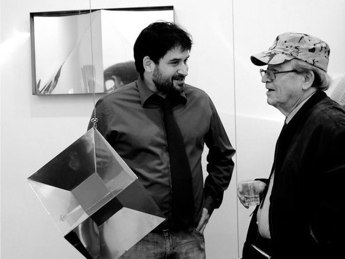

antologia critica
Spinto da un fervore di fare arte direttamente proporzionale a quello di voler eternare la scienza nella materia e attraverso la fusione di materiali industriali, come l’acciaio inox e il cemento, con quelli più tradizionali della pietra e del legno, Attilio Pierelli fu in grado di realizzare vere e proprie sculture di confine: opere riconosciute dalla comunità scientifica come visualizzazioni di concetti matematici e, contemporaneamente, come oggetti d’arte da critici ed esperti umanisti.

Attilio Pierelli e Palma Bucarelli all'inagurazione della mostraPierelli Iperspazio
Roma, 1982
GIUSEPPE
Illusione ottica e plasticismo spaziale, in “Monumenti Inox”, catalogo Galleria L’Obelisco, Roma, 1965.
Il problema estetico affrontato da Pierelli sembrerebbe limitato alle superfici dei suoi splendidi oggetti: cioè, tutte le operazioni visuali sembrerebbero originate e circoscritte alla spazialità bidimensionale dell'opera. Ma, se questo è il dato oggettivo, il risultato è Completamente opposto, giacché la particolare natura del materiale e le sagomature ad esso impresse dall'operatore condizionano l'osservatore nel senso di una spazialità tridimensionale che è tipicamente plastica.
Le varie strutture di riflesso e di deformazione, accumulate su queste superfici, determinano infatti una visualità al limite tra la coscienza della percezione esatta e la tentazione di cedere alla lucida e fascinosa vertigine di uno spazio insondato e infinito [...]
L'oggetto di Pierelli, al pari di altre produzioni di tendenza gestaltica precisate in senso Op, è una specie di tavolo di collaudo per le capacità recettive dell'occhio di cui vengono messe alla prova le facoltà percettive di ciò che è illusorio e di ciò che invece è reale. Il problema è, in sostanza, quello esaminato dal Gombrich sui rapporti tra percezione e illusione. E, se c'è illusione, non si tratta di una illusione “proiettata” ma, ancora una volta, di una illusione meramente ottica, generata dall'occhio e completamente esaurita in esso.
LORENZA
Pierelli all’Obelisco, in “Momento Sera”, Roma, 16 gennaio 1966..
Scultura, oggetto, trompe-l'oeil, come definire le opere di Pierelli esposte allo Obelisco? Anche i tre presentatori detta mostra, Vivaldi, Gatt e Menna, danno a questo interrogativo tre diverse risposte: rispettivamente poetica, tecnico-formale e critico-psicologica, e sono tutte risposte egualmente pertinenti e convincenti. Sta di fatto che questi - monumenti Inox - pur partendo idealmente dalle colonne senza fine di Brancusi e mantenendo più di una affinità con gli acciai di Max Bill, acquistano con le loro lucide, specchianti superfici un carattere del tutto nuovo, cinetico, programmato o più semplicemente op. come ben osserva Gatt. Ma sono poi veramente primarie e determinanti le mutevoli capacità di ritrazione della luce e delle immagini di queste polite e ondulate superfici? A me pare che accentrando l'attenzione solo su questo elemento, sia pure precipuo delle opere di Pierelli, si finisca col limitare il suo lavoro ad un tipo di ricerca essenzialmente sperimentale. Al contrario Pierelli è soprattutto scultore; che poi oggi le sue opere abbiano una così preponderante componente ludica ciò non toglie né aggiunge nulla alle sue capacità di invenzione plastica. Del resto da Calder a Schöffer a Lippold, è molto ormai che la scultura si affida alla collaborazione dei sensi dello spettatore, ma non bisogna confondere il gioco ambiguo delle immagini riflesse su queste sculture con il loro primario valore plastico. Cosi più che in una visione emblematica o labirintica di immagini rimandate all'infinito e all'infinito smentite, mi piace vedere queste opere di Pierelli come veri monumenti della nostra epoca: sensibili alta luce e ai colori, leggeri al vento ma anche capaci di vivere con una loro perentoria forza architettonica e plastica, nei nuovi spazi di una moderna urbanistica.
FRANCESCO
Attilio Pierelli e il futuro tecnologico. Incontro con gli scultori della nuova generazione, in “Vita”, Roma, 28 ottobre 1972
A vederlo così gentile, premuroso, indaffarato nel suo studio dentistico, con il camice chiuso fino al collo, gli occhiali montati in oro, Attilio Pierelli appare come il professionista arrivato, pieno di clientela, il suo carnet stracolmo di appuntamenti, e non immagineresti mai che la sera, smessi gli abiti ufficiali e indossata una tuta, lo puoi trovare fino a notte tarda in una Officina a porta Portese, a maneggiare presse, tagliatrici, sbarre e fogli di acciaio, trasformarsi in uno scatenato lavoratore del metallo, e lì comporre le sue eleganti, astrali, snelle, luminose sculture in acciaio inossidabile, lui caposcuola, iniziatore di un certo tipo di scultura, famoso in America, con opere nelle maggiori gallerie italiane e straniere, (alla Galleria d'Arte Moderna di Roma, nell'ingresso, c'è una sua grande scultura sonora).
GIULIO CARLO
Pierelli iperspazio, catalogo mostra Galleria Editalia, Roma, 1982
Studiando gli angoli di riflessione di superfici speculari, Pierelli ottiene figure geometriche immaginarie. Tutte le figure geometriche sono immaginarie, quelle di Pirelli sono figure geometriche immaginarie elevate a potenza. Designano spazi ad un tempo inverosimili e oggettivamente dimostrabili, quasi sempre reversibili. Pierelli opera al confine di fantasia e logica matematica, anzi al di là di esso. Il rapporto tra arte e scienza, pensiero fantastico e pensiero logico, può configurarsi in parecchi modi, ma non è mai la gara di Achille e della tartaruga. Sono parallele che si congiungono all'infinito, ma si congiungono: la fantasia formula ipotesi non verificabili col calcolo, la matematica mostra visivamente ciò che il calcolo non arriva a dimostrare. Vi sono problemi, diceva Peano, che ammettono soltanto una soluzione grafica. Non v'è nulla di strano nel fatto che oggi le forme matematiche abbiano un valore iconico e la fantasia si muova secondo algoritmi matematici. Non si tratta di dimostrare che le forme matematiche possono avere una loro qualità estetica, una loro astratta, quintessenziale bellezza. La bellezza s'incontra lungo la via del pensiero, non altrove. Le forme matematiche appartengono al nostro mondo d'immagine, il nostro pensiero procede secondo i ritmi del pensiero scientifico, l'arte ha la scelta tra muoversi secondo quei ritmi o non muoversi affatto.

Attilio Pierelli con Italo Mussa e Paolo Melodia sotto la scultura Quadrifoglio Roma, Piazza Margana, 2 maggio 1973 (foto di Michelangelo Giuliani)
MICHELE
in “Dimensionalismo: advanced interdisciplinary art”, Roma, 1987
[...] capitando una mattina in una pineta dell’EUR a Roma. Appesi agli alberi erano dei grandi oggetti metallici, i solidi regolari dello spazio a quattro dimensioni. Le grandi sculture, che di questo si trattava, ruotando nell’aria riflettevano sulle loro superfici, simili a specchi, l’ambiente circostante.
L’effetto era sconvolgente specialmente per gli ignari passanti che non sapevano di cosa si trattasse.
In realtà la vista di quegli oggetti quadrimensionali era attesa ed era anzi stata preparata con cura, tanto che tutta la scena fu ripresa con una cinepresa e chiunque può vedere il resoconto di questi incontri ravvicinati nel film Dimensions da me realizzato nel 1982.
Artefice di questo incontro Attilio Pierelli che, come il quadrato in Flatlandia, una volta avuta la visione della terza dimensione, cercava di convincere i suoi cittadini della sua esistenza, così lui cercava di far vedere a coloro che non l’avevano visitata, la terra della quarta dimensione.
Il notevole vantaggio rispetto al libro era che questi oggetti che Pierelli aveva visto se li era portati dietro nel nostro mondo e si poteva toccarli e riflettercisi dentro, immaginando da vicino un viaggio nelle più alte dimensioni.
SIMONETTA
Lettera al Direttore di un Museo d’Arte Contemporanea, in “Extremalia: sculture di Attilio Pierelli. Un saggio di Herwarth Röttgen; una lettera di Simonetta Lux”, Roma, 1998
Caro Direttore,
ti invio alcuni cenni sull’opera di uno scultore italiano Attilio Pierelli (n.1924).
Il lavoro di Attilio Pierelli, dalla fine degli anni ’50 ad oggi, [...] è riconosciuto nella classica storiografia e critica d’arte e legittimato anche internazionalmente dal collezionismo pubblico e privato (sue opere si trovano, oltre che alla Galleria nazionale d’arte Moderna di Roma, in Musei americani, giapponesi, europei). [...]
Fin dalla metà degli anni ’60, all’interno di un percorso comunque originale ed estraneo alle correnti optical, la scultura ha trovato in Pierelli una specie di nuovo “statuto”, entrando attraverso le sue opere in un “universo” per così dire ‘di confine’ tra l’arte e la scienza, dove poi a un certo punto gli scienziati l’hanno “incontrato”.
Da numerosi scienziati fisici e matematici le sculture di Pierelli sono state riconosciute come “estensioni visibili” - ma autonomamente nate - di intuizioni, ipotesi, verifiche cruciali della fisica e della matematica contemporanee. [...]
L’interesse del lavoro di Pierelli, già straordinario nella lunga serie di cicli articolati sulla “specularità”, appare consistere per quel che concerne la sua peculiare e unica esperienza di relazione con il linguaggio e l’immaginario scientifico, in tre ordini di fatti:
1) |
che lo scultore, nell’infinita possibilità di forme, ne abbia intuitivamente scelte proprio alcune, per le quali è entrato nell’universo di quelle che i matematici chiamano “singolarità” e i fisici “cronotopi”, universo nel quale fisici e matematici l’hanno appunto “incontrato” |
|---|---|
2) |
che l’opera di Pierelli non è “rappresentazione” di una “realtà” fisica, descritta o descrivibile nella conoscenza scientifica attraverso un linguaggio/codice esternamente incomunicabile, ma “visualizzazione” di un procedimento conoscitivo, grazie all’invenzione di un oggetto/immagine (si ha un solido dalle superfici più o meno specchianti donde per un gioco di riflessioni appaiono una serie di altre figure illusoriamente solide, ma scientificamente equivalenti a processi scientifici conoscitivi del reale) che per il suo funzionamento di realtà/illusorietà coincide con l’idea in atto della scienza contemporanea che ciò che noi “vediamo” non è che una semplice immagine, deformata di una realtà assai più complessa |
3) |
che, nell’incontro artista/scienziato si apre l’interrogativo: perché all’unicità delle forme estremali individuate dalle equazioni di Einstein relative alle traiettorie “gravi” intorno a un “buco nero” (unicità rispetto alle infinte forme che si possono creare nello spazio), corrisponde un senso di “piacere” una volta che quelle stesse “forme” siano ricostruite spazialmente e rese visibili all’occhio umano? |
CHIARA
in “Extremalia: sculture di Attilio Pierelli. Un saggio di Herwarth Röttgen; una lettera di Simonetta Lux”, Roma, 1998

Attilio Pierelli con Loris Schermi alla mostra Iper Spazio Macchina Roma, Galleria Muga+Merzbau, 2010 (foto di Valentina Piccinni)Quando colpisce un piano proiettato verso uno spazio infinito, Pierelli rappresenta la condizione umana. L’inquietudine che l’artista sente nei confronti della sua arte, che costituisce stimolo e ragione delle sue invenzioni, va intensificandosi proprio negli anni ’60 in cui ci fu il primo atto di rifiuto e di negazione nei confronti del fenomeno dell’Informale: rifiuto della creazione artistica per considerare invece tale attività un atto di ricerca, rifiuto delle tecniche tradizionali a favore di nuovi materiali, rifiuto dell’opera d’arte come unica ed irripetibile a favore di un atto sempre più diretto dell’osservatore nel senso di far intervenire, variare, programmare, costruire l’opera attraverso l’interazione con lo spettatore.
CLAUDIA
in “Tradimensione”, catalogo mostra Accademia di Romania, Roma, febbraio - marzo 2001
Pierelli ha collaborato con gli scienziati e proprio attraverso questo scambio, perseguito per decenni, è riuscito come pochi artisti a sperimentare modelli matematici complessi, che si offrono alla percezione dello spettatore nella loro articolata rappresentazione plastica. Nel corso degli anni sessanta, esaurita la fase informale, molti artisti ricercarono nel rapporto con la scienza, e con le nuove tecnologie, inediti riferimenti. Ma pochissimi sperimentarono questa strada fino ai sostanziali approfondimenti di Pierelli. Principi di logica matematica sono alla base di queste sculture, che non so descrivere con termini appropriati. Pure forme di geometrie astratte, dove le superfici di acciaio specchianti non concedono nulla alla manualità dell'artista, ma riflettono perfettamente, moltiplicandolo e frantumandolo, lo spazio circostante, creando effetti di spaesamento, di ambiguità, dinamiche illusorie, prospettive irreali. Sono sculture che sembrano prevalentemente destinate a spazi esterni, sia natura che ambiente urbano, in cui la fase ideativa è preciso calcolo progettuale, studio, modello, sintesi.